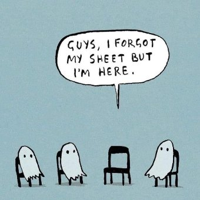

--Little Britain
"There is no self. But what about me?"
--Seekers
This is one of those seemingly light Mind-Ticklers which discusses the not-grand, but perhaps may be helpful and practical anyway.
It’s a subject that probably gets in the way of what you want all the time.
A subject you think you already know.
But you don’t.
Because maybe you’re doing some form of inquiry but feel stuck on the hard stuff. Or maybe you’re doing your best to “sit with feelings” but it’s uncomfortable.
Or maybe you’re seeking an understanding of nonduality or consciousness and reality or yourself, but there’s still more to get.
Or maybe you understand no-self but there’s still a sense that HELLOOO, you’re RIGHT HERE.
Very likely, my exploring friend, you are run by BUTs.
Those three letters own you.
Because they take you not where you want to go, but where they want to go.
Redirect, rerouting, sending you off on another direction.
The little rascals change the subject.
As if thought says, (belligerently, triumphantly,) “Ok I’ll play along. But soon as I can I’m going back to the way I do things. We’re wasting our time here.”
Which you probably know.
I mean it’s common knowledge that Yes, but really means no. It's common knowledge that, pretending to add to the yes, BUT actually negates it.
BUTs essentially cancel the first part of their sentences.
“Is it true? No, but it feels like it.”
Um, okay.
So why is this so common that everyone does it, even while knowing better?
Because the mind’s entire game is to hide the self’s nonexistence.
It’s a one trick pony, but it employs many strategies.
BUT is an easy, everybody-says-it-so-no-one-notices ploy.
Which is why there’s a special kind of irony in exploring oneness-of-being in some way, while at the same time inserting BUT into every inquiry, every self examination, every meditation, every statement of feeling (except bad ones.)
Because BUT always equals two. Two viewpoints, two answers, two feelings, two thoughts.
So much for oneness.
Meanwhile, which is the answer? Is it true or isn’t it? Is the feeling welcome or isn’t it? Do you experience no-self or don’t you?
There’s only one answer. If truth exists, there’s only one of it.
So it might be fun next time, to play with what an answer or understanding feels like, without tacking on a BUT (or any of its little friends: however, and, except, yet, and still)
What would understanding feel like without a BUT?
Now to be clear, this isn’t about trying to stop BUT from coming.
That’s not going to work anyway. Stopping thought is not in your power.
Instead, if you want to play with a different experience, tell the BUT to wait. Tell it to come back later.
Any feels-urgent-but-is-it BUT can wait 10 minutes.
And then you get to have the fun of seeing if it even bothers to return at all, once there’s no longer a need to divert.
You get to see what it feels like to actually notice, attend to, and honor the first part of your answer...
The part said before the BUT came along to eliminate it.
“I can’t find the self.” PERIOD.
“This feels better.” PERIOD.
“This feeling is welcome.” PERIOD.
I mean, who knows, maybe the usually strong sense of self, with all its many opinions and feelings,
might even begin to feel a little less solid, a little less tangible, a little less viable,
when BUT isn’t given free reign to poop all over your answers and the first part of sentences.
Now granted, you may be thinking, "But this is stupid. Asking the BUT to wait is too simple."
And maybe you're right.
But in that case it's no big deal to try it, and there’s not much to lose, is there.
Or it could turn out that maybe this is a very simple way to play with something more than book-learning, something more than intellectualized concepts which never do feel real for you.
Because till now, the BUTs haven’t let them.
But there’s only one way out find out.
Click here to get your Mind-Tickled every week.
Click here to watch Judy on Buddha at the Gas Pump
"The fool will laugh at you, but the wise man will understand.”
--Linji Yixuan
“It may seem we're on a path, but we are always back where we started.”
--Rupert Spira
"I know you’re tired but come, this is the way."
--Rumi
